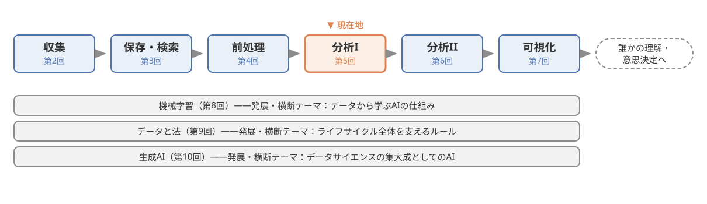
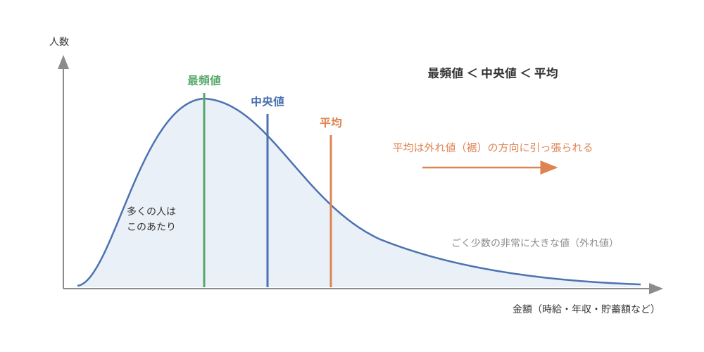
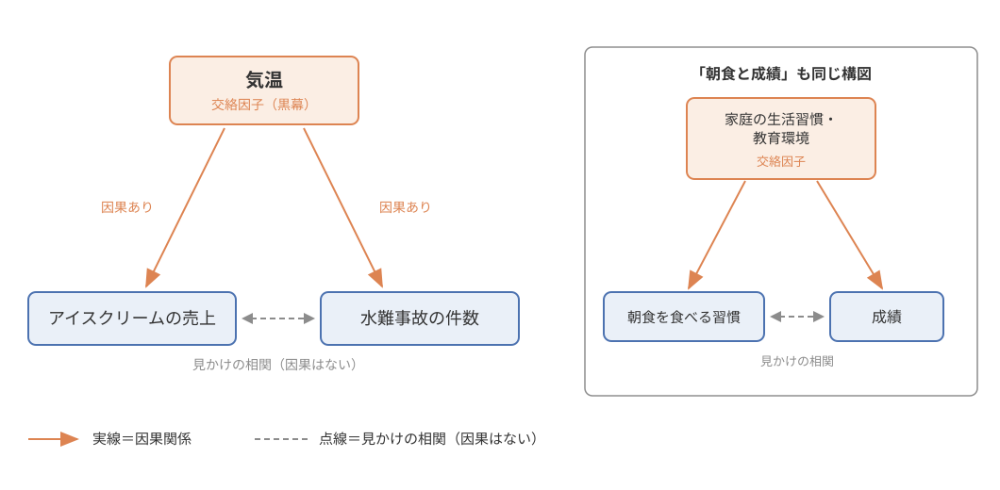
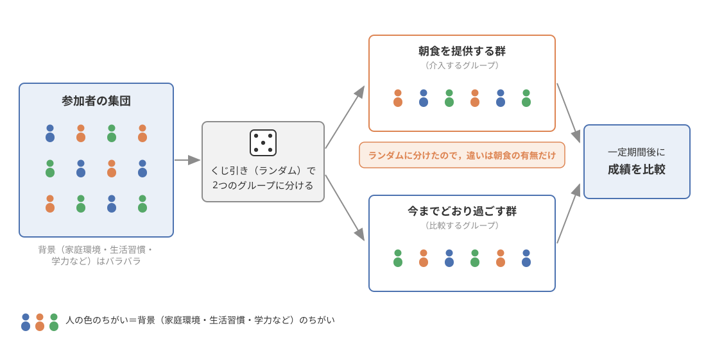
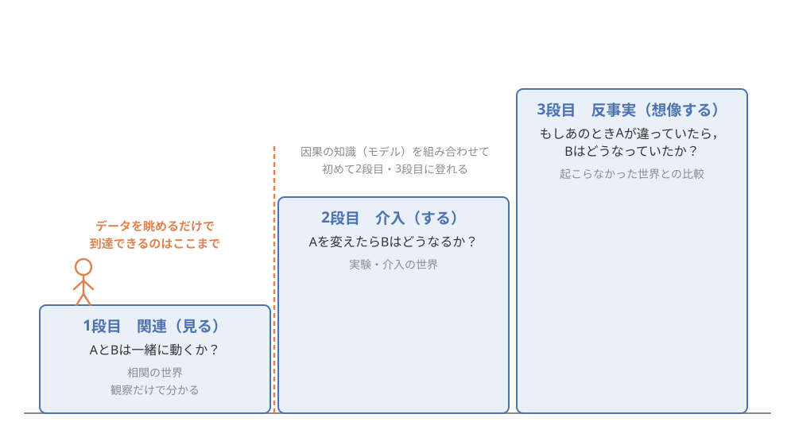
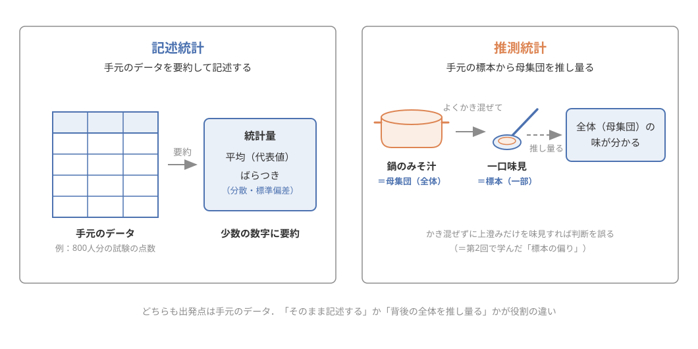

第5回：データの分析I——データを要約し，関係を読む#
この回で学ぶこと#
データを少数の数字に要約する記述統計の基本（代表値とばらつき）を理解し，平均・中央値・最頻値を場面に応じて使い分けられるようになる
「統計量だけではデータの姿は分からない」ことを，アンスコムの四重奏という有名な例で体感する
2つの量の関係の強さを表す相関の考え方と，相関係数の読み方を理解する
「相関があること」と「因果があること」はまったく別であることを，疑似相関・交絡の概念とともに説明できるようになる
因果を確かめるための基本の発想である介入と比較（ランダム化比較試験）を理解し，観察データだけから因果に迫ることの難しさを説明できるようになる
この章には，Pythonのコードとその実行結果が多く登場します．序章でも述べたとおり，本科目ではコードを書けるようになる必要はありません．コードは「読んで，動かして，実感するための材料」です．グラフや数値の変化を眺めるだけでも，この回の学習目標は達成できます．
はじめに，図 23 で本科目における現在地を確認しておきましょう．データのライフサイクルのうち，今回は集めて整えたデータを分析する段階です．

図 23 本科目における現在地．データのライフサイクルのうち，今回は「分析」（第5回）を扱う．#
導入：「朝ごはんを食べる学生は成績が良い」は本当か#
まずは，みなさんが一度は目にしたことがありそうな話から始めましょう．
事例：「朝食と成績」のニュース
テレビやネットニュースで，「朝ごはんを毎日食べる子どもは，食べない子どもよりテストの成績が良い」という調査結果が紹介されることがあります．この手の調査自体は実際に数多く行われており，たしかに「朝食を食べる習慣」と「成績」の間には関係（相関）が見られることが多いのです．
このニュースを見た人の多くは，自然にこう考えます．「そうか，朝ごはんを食べれば成績が上がるのか．明日から毎朝しっかり食べよう」と．
しかし，ここで一度立ち止まってほしいのです．この調査結果が示しているのは，あくまで「朝食を食べる子どもたちの成績が，平均的に見て高い傾向がある」という事実だけです．「朝食を食べることが原因で成績が上がる」とは，実はひとことも言っていません．たとえば，生活リズムが整った家庭では朝食も出るし，勉強の習慣も身につきやすい，ということかもしれません．その場合，朝食そのものを増やしても，成績は思ったほど変わらない可能性があります．
「関係がある」ことと「原因である」ことの違い——これが，今回の授業の最大のテーマである相関と因果の区別です．データ分析の結果は，ニュース・広告・SNSなどを通じて毎日のようにみなさんの目に飛び込んできます．そのとき，示された数字やグラフから「言えること」と「言えないこと」を見分ける力は，データサイエンス・リテラシーの核心と言ってよいものです．
この章では，まずデータを数字で要約する記述統計の基本を押さえ，次に2つの量の関係をとらえる相関を学びます．そのうえで，「相関があっても因果があるとは限らない」という落とし穴をじっくり掘り下げ，因果を確かめるための基本の発想——介入と比較——と，それができないときに観察データだけから因果に迫ることの難しさまでを学びます．
それでは，コードを動かす準備をしておきましょう．次のセルでは，この章で使うライブラリを読み込んでいます（クリックすると中身が見られます）．
記述統計：データを数字で要約する#
なぜ要約が必要なのか#
800人が受けた試験の採点結果を想像してください．800個の点数をそのまま眺めても，「今回の試験は難しかったのか」「点数は割れたのか」はすぐには分かりません．人間は，何百・何千という数字の列をそのまま理解することができないからです．
そこで，データ全体の特徴を少数の数字に要約してとらえようとするのが，記述統計（descriptive statistics）です．記述統計で使われる要約の数字（平均や分散など）を統計量と呼びます．要約の観点は大きく2つあります．
データの「真ん中」はどのあたりか —— 代表値
データはどれくらい「散らばって」いるか —— ばらつき
代表値：平均・中央値・最頻値#
データ全体を代表する1つの値を代表値と呼びます．代表値には，主に次の3つがあります．
平均（平均値，mean）：すべての値を足して，個数で割った値です．みなさんが「テストの平均点」でおなじみの，最もよく使われる代表値です．
中央値（median）：データを小さい順に並べたとき，ちょうど真ん中に来る値です．データが偶数個のときは，真ん中の2つの値の平均を取ります．
最頻値（mode）：データの中で最も多く登場する値です．たとえば売れ筋の靴のサイズを知りたいときのように，「一番よくあるケース」を知りたいときに役立ちます．
「代表値なんて平均だけで十分では？」と思うかもしれません．ところが，平均には大きな弱点があります．それを，アルバイトの時給の例で確かめてみましょう．
ある学生が，同じ学部の友人7人に時給を聞いてまわったとします．コンビニ，飲食店，書店など，時給1000円〜1200円くらいのアルバイトが並びました．
# 友人7人のアルバイトの時給（円）
wages = pd.Series([1000, 1000, 1030, 1050, 1100, 1150, 1200])
print("平均値：", round(wages.mean(), 1), "円")
print("中央値：", wages.median(), "円")
print("最頻値：", wages.mode()[0], "円")
平均値： 1075.7 円
中央値： 1050.0 円
最頻値： 1000 円
平均・中央値ともにおよそ1000円台の前半で，実感とよく合う「代表値」になっています．ではここに，時給5000円で家庭教師をしている友人が1人加わったらどうなるでしょうか．
# 時給5000円の家庭教師の友人を1人加える
wages2 = pd.concat([wages, pd.Series([5000])], ignore_index=True)
print("平均値：", round(wages2.mean(), 1), "円")
print("中央値：", wages2.median(), "円")
print("最頻値：", wages2.mode()[0], "円")
平均値： 1566.2 円
中央値： 1075.0 円
最頻値： 1000 円
たった1人加わっただけで，平均は約1076円から約1566円へと，500円近くも跳ね上がりました．「友人たちの時給はだいたい1500円くらい」と言われたら，多くの人の実態とかけ離れた印象を与えてしまいます．一方，中央値は1050円から1075円へとわずかに動いただけで，最頻値は変わっていません．
このように，平均は外れ値（他の値から大きく離れた値，第4回で学びました）に強く引っ張られるという弱点を持ちます．逆に，中央値は外れ値の影響を受けにくい頑健（ロバスト）な代表値です．
この性質は，実社会のデータを読むときにとても重要です．たとえば「平均年収」や「平均貯蓄額」のニュースを見て，「自分のまわりの実感より高すぎないか？」と感じたことはないでしょうか．年収や貯蓄額のデータには，ごく少数の非常に大きな値（高所得者・高額資産家）が含まれるため，平均はその方向に引っ張られ，「ふつうの人」の姿からずれてしまうのです．こうしたデータでは，中央値をあわせて見ることで実態に近い理解ができます．
この様子を模式的に描いたのが 図 24 です．年収や貯蓄額のように一部の大きな値に偏った（右に裾を引いた）分布では，多くの人が集まる山のあたりに最頻値と中央値が位置する一方，平均だけが外れ値（裾）の方向に引っ張られます．

図 24 右に裾を引いた分布と3つの代表値の位置関係．最頻値＜中央値＜平均の順に並び，平均だけが外れ値（裾）の方向に引っ張られて，「多くの人」の実感からずれていく．#
警告
「平均＝ふつう・真ん中」と思い込むのは危険です．平均が「真ん中」の実感と一致するのは，データが左右対称に近い形で分布しているときだけです．年収・貯蓄・SNSのフォロワー数のように一部の大きな値に偏ったデータでは，平均と中央値は大きくずれます．ニュースで「平均◯◯円」という数字を見たら，「中央値はいくつだろう？」「外れ値に引っ張られていないか？」と考える習慣をつけましょう．
ばらつき：分散と標準偏差#
代表値だけでは，データの姿はまだ半分しか分かりません．たとえば，2つのクラスで同じ試験をして，どちらも平均点が60点だったとします．しかし，
クラスA：ほとんどの学生が55〜65点に集まっている
クラスB：90点以上の学生と30点未満の学生に大きく割れている
という2つの状況は，平均点だけを見るとまったく区別できません．授業の進め方を考える先生にとって，この2つはまるで違う状況のはずです．そこで必要になるのが，データの散らばり具合，すなわちばらつきをとらえる統計量です．
ばらつきを表す代表的な統計量が分散（variance）と標準偏差（standard deviation）です．考え方は次のとおりです．
まず，各データが平均からどれだけ離れているか（偏差）を測ります．
離れ方には「平均より上」と「平均より下」があるので，符号を消すために偏差を2乗してから平均します．こうして得られる値が分散です．
ただし分散は「2乗」した値なので，単位も2乗されてしまい（点数なら「点の2乗」），直感的に扱いにくくなります．そこで分散の平方根を取って元の単位に戻した値が標準偏差です．
細かい計算式を覚える必要はありません．押さえてほしいのは，「分散・標準偏差は，データが平均のまわりにどれくらい散らばっているかを表す数字であり，大きいほどばらつきが大きい」ということだけです．先ほどの例で言えば，クラスAは標準偏差が小さく，クラスBは標準偏差が大きい，と一言で表現できます．
ちなみに，模試の結果でおなじみの「偏差値」は，平均と標準偏差を使って「自分が全体の中でどの位置にいるか」を表せるように点数を変換したものです．平均ぴったりなら偏差値50，標準偏差1つ分だけ平均より上なら偏差値60，という決め方になっています．みなさんは高校時代から，知らないうちに記述統計の世界に触れていたわけです．
統計量だけでは分布は分からない——アンスコムの四重奏#
ここまでで，代表値とばらつきという要約の道具を手に入れました．すると，こう考えたくなります．「平均とばらつき（と後で学ぶ相関係数）さえ計算すれば，データのことはだいたい分かるのでは？」と．
この考えが危ういことを鮮やかに示したのが，統計学者アンスコムが1973年に発表したアンスコムの四重奏（Anscombe's quartet）と呼ばれる4組のデータです [Anscombe, 1973]．実際に計算して確かめてみましょう．次のコードでは，アンスコムの論文に載っている4組のデータ（I〜IV）をそのまま入力し，それぞれの統計量を計算しています．
# アンスコムの四重奏：Anscombe (1973) の4組のデータをそのまま入力
anscombe = {
"I": {
"x": [10, 8, 13, 9, 11, 14, 6, 4, 12, 7, 5],
"y": [8.04, 6.95, 7.58, 8.81, 8.33, 9.96, 7.24, 4.26, 10.84, 4.82, 5.68],
},
"II": {
"x": [10, 8, 13, 9, 11, 14, 6, 4, 12, 7, 5],
"y": [9.14, 8.14, 8.74, 8.77, 9.26, 8.10, 6.13, 3.10, 9.13, 7.26, 4.74],
},
"III": {
"x": [10, 8, 13, 9, 11, 14, 6, 4, 12, 7, 5],
"y": [7.46, 6.77, 12.74, 7.11, 7.81, 8.84, 6.08, 5.39, 8.15, 6.42, 5.73],
},
"IV": {
"x": [8, 8, 8, 8, 8, 8, 8, 19, 8, 8, 8],
"y": [6.58, 5.76, 7.71, 8.84, 8.47, 7.04, 5.25, 12.50, 5.56, 7.91, 6.89],
},
}
# 4組それぞれの統計量（平均・分散・相関係数）を計算して表にする
rows = []
for name, d in anscombe.items():
x = np.array(d["x"])
y = np.array(d["y"])
rows.append({
"データ": name,
"xの平均": round(x.mean(), 2),
"xの分散": round(x.var(ddof=1), 2),
"yの平均": round(y.mean(), 2),
"yの分散": round(y.var(ddof=1), 2),
"xとyの相関係数": round(np.corrcoef(x, y)[0, 1], 3),
})
pd.DataFrame(rows)
| データ | xの平均 | xの分散 | yの平均 | yの分散 | xとyの相関係数 | |
|---|---|---|---|---|---|---|
| 0 | I | 9.0 | 11.0 | 7.5 | 4.13 | 0.816 |
| 1 | II | 9.0 | 11.0 | 7.5 | 4.13 | 0.816 |
| 2 | III | 9.0 | 11.0 | 7.5 | 4.12 | 0.816 |
| 3 | IV | 9.0 | 11.0 | 7.5 | 4.12 | 0.817 |
表を見てください．4組のデータは，xの平均・分散，yの平均・分散，そしてxとyの相関係数（次の節で説明します）が，小数第2位までほぼ一致しています．統計量だけを見れば，「この4組は同じようなデータだ」と結論したくなります．
では，この4組を散布図（横軸にx，縦軸にyを取って点を打った図）にして，実際の姿を見てみましょう（点にマウスを重ねると各点の値が表示されます）．
どうでしょうか．統計量がほぼ同じ4組のデータは，グラフにするとまったく違う顔をしていました．
データセットIは，素直な右上がりの関係です．
データセットIIは，直線ではなく曲線的な（山なりの）関係です．
データセットIIIは，1点の外れ値を除けばきれいな直線の上に乗っています．
データセットIVは，xがほぼ同じ値に集中しており，たった1つの点が関係の見かけをつくり出しています．
アンスコムがこの例で伝えたかったのは，「統計量による要約とグラフによる観察は，どちらか一方ではなく両方行うべきだ」ということです [Anscombe, 1973]．要約は便利ですが，要約の過程で必ず情報が失われます．データを分析するときは，統計量を計算するだけでなく，必ずグラフを描いて自分の目で分布を確かめる——この教訓は，50年経った今もデータ分析の鉄則であり続けています．グラフの描き方・読み方そのものは，第7回「データの可視化とコミュニケーション」でじっくり扱います．
相関：2つの量の関係をとらえる#
相関とは何か#
ここまでは，時給や点数といった「1つの量」の要約を考えてきました．しかしデータ分析の面白さの多くは，「2つの量の間に関係があるか」を調べるところにあります．
勉強時間が長い学生ほど，成績が良いのか？
SNSの投稿につく「いいね」の数は，投稿時刻と関係があるのか？
気温が高い日ほど，アイスクリームは売れるのか？
このような，「一方が大きいとき，もう一方も大きい（または小さい）傾向がある」という2つの量の間の関係を相関（correlation）と呼びます．一方が増えるともう一方も増える傾向があるとき正の相関，一方が増えるともう一方は減る傾向があるとき負の相関があると言います．
相関係数の読み方#
相関の「強さ」を1つの数字で表したものが相関係数（correlation coefficient）です．相関係数は必ず−1から+1までの値を取り，読み方のポイントは2つだけです．
符号が関係の向きを表します．プラスなら正の相関（右上がりの傾向），マイナスなら負の相関（右下がりの傾向）です．
絶対値の大きさが関係の強さを表します．1に近いほど点が一直線に近く並び，0に近いほど直線的な関係は見られません．
「どこからが強い相関か」に絶対の基準はありませんが，おおまかな目安として，絶対値が0.7を超えると「強い相関」，0.4〜0.7で「中程度の相関」，0.2以下では「ほとんど相関なし」などと表現されることが多いです（分野によって目安は異なります）．
とはいえ，相関係数0.8や0.3と言われても，どんな散布図なのかすぐには想像しにくいと思います．そこで，相関係数の値と散布図の見た目の対応を，自分の目で確かめられるグラフを用意しました．次のコードでは，相関係数がさまざまな値になるように乱数でデータをつくっています（乱数の種を固定しているので，何度実行しても同じ結果になります）．
# 相関の強さが異なる6組のデータを乱数でつくる
np.random.seed(0) # 乱数の種を固定して，結果を再現可能にする
n = 200 # 各データセットの点の数
target_rs = [0.9, 0.6, 0.3, 0.0, -0.6, -0.9] # 目標とする相関係数
datasets = []
for r in target_rs:
x = np.random.normal(0, 1, n)
noise = np.random.normal(0, 1, n)
y = r * x + np.sqrt(1 - r**2) * noise # 相関係数がおよそ r になるように y をつくる
actual = np.corrcoef(x, y)[0, 1] # 実際に得られた相関係数
datasets.append((r, x, y, actual))
次のグラフは，上でつくった6組のデータをドロップダウンメニューで切り替えて表示できるようになっています．メニューから相関係数を選んで，散布図の見た目がどう変わるかをぜひ自分の手で試してみてください（点にマウスを重ねると値も表示されます）．
切り替えてみると，次のことが実感できるはずです．
相関係数が +0.9だと，点はかなりはっきりした右上がりの帯に並びます．
+0.6 → +0.3と小さくなるにつれて，帯はどんどんぼやけていきます．
0.0では，点はただの雲のように広がり，傾向は見えません．
マイナスになると，帯の向きが右下がりに変わります．
警告
相関係数を読むときには，次の2点に注意してください．
相関係数は「直線的な関係」しか測れません．アンスコムのデータセットIIのような曲線的な関係は，相関係数ではうまくとらえられません．
相関係数は外れ値に弱いという点は平均と同じです．データセットIIIやIVのように，たった1つの外れ値が相関係数を大きく変えてしまうことがあります．
だからこそ，相関係数を計算したら必ず散布図もあわせて見る，というのが鉄則です．
相関と因果の区別——データ分析最大の落とし穴#
いよいよ今回の中心テーマです．時間をかけてじっくり考えていきましょう．
因果関係とは何か#
因果（因果関係，causation）とは，「一方が原因となって，もう一方という結果を引き起こす」関係のことです．「勉強時間を増やすと成績が上がる」「気温が上がるとアイスクリームが売れる」のように，原因を変化させれば結果も変化する，という関係です．
相関と因果は，日常の言葉ではしばしば混同されますが，意味はまったく異なります．
相関：2つの量が「一緒に動く傾向がある」という，データ上の見え方の話
因果：一方を変えればもう一方が変わるという，世界の仕組みの話
重要なのは，因果関係があれば通常は相関が観察されますが，相関が観察されても因果関係があるとは限らない，ということです．「相関は因果の証拠としては不十分」——これがこの章でいちばん持ち帰ってほしいメッセージです．
では，因果がないのに相関が見えてしまうのは，どんなときなのでしょうか．主な原因は次の3つです．
偶然の一致：たまたま2つの量が似た動きをしていた
第3の変数（交絡）：隠れた共通の原因が両方を動かしていた
因果の向きの取り違え：関係はあるが，原因と結果が逆だった（または双方向だった）
順番に見ていきましょう．
偶然の一致——疑似相関のギャラリー#
まったく無関係なはずの2つの量でも，データを大量に集めて総当たりで組み合わせれば，偶然よく似た動きをするペアがいくらでも見つかります．このように，実際には意味のある関係がないのに，見かけ上強い相関が観察される現象を疑似相関（見せかけの相関，spurious correlation）と呼びます．
疑似相関の面白さを世に知らしめたのが，Tyler Vigenが運営するウェブサイト「Spurious Correlations」です [Vigen, 2015]．このサイトは，公開されている統計データを片っ端から突き合わせて，「ある食品の年間消費量と，ある学問分野の博士号取得者数」「ある州でのある出来事の件数と，まったく関係のない事故の件数」のような，誰がどう見ても無関係な2つの量の年ごとの推移が驚くほどよく一致する例を大量に集めたものです．グラフを見ると2本の線がぴったり重なっていて，思わず「何か関係があるのでは」と感じてしまうほどです．
ここで注意してほしいのは，このサイトは査読を経た学術論文ではなく，あくまで「相関だけでは何も言えない」ことを面白く伝えるためのウェブサイトだという点です．しかし教材としては非常に優れています．なぜなら，「グラフがぴったり重なっている＝関係がある」という直感が，いかに当てにならないかを一目で教えてくれるからです．データの組み合わせの数が膨大であれば，偶然だけでいくらでも「きれいな相関」は生まれる——このことは頭の片隅に置いておいてください．
交絡——隠れた第3の変数#
疑似相関のもう1つの，そして実社会で最も重要なパターンが交絡（confounding）です．交絡とは，注目している2つの量の両方に影響を与える第3の変数（これを交絡因子と呼びます）が隠れているせいで，直接の因果がない2つの量の間に相関が生じてしまう現象です．
定番の例で考えてみましょう．「アイスクリームの売上」と「水難事故の件数」です．日ごとのデータを集めると，この2つの間には正の相関が観察されることが知られています．アイスクリームがよく売れた日ほど，水の事故が多いのです．
では，「アイスクリームを食べると泳ぎが下手になる」のでしょうか？ もちろん違います．少し考えれば，種明かしは簡単です．気温です．
気温が高い日は，アイスクリームがよく売れる（気温 → 売上）
気温が高い日は，海やプールに行く人が増え，水難事故も増える（気温 → 事故）
つまり，気温という交絡因子が両方を同時に動かしているために，アイスクリームと水難事故の間に「見かけの相関」が生まれているのです．アイスクリームの販売を禁止しても，水難事故は減りません．
この構図を図解したものが 図 25 です．気温から売上へ，気温から事故へは因果の矢印（実線）が伸びていますが，売上と事故の間に直接の矢印はなく，点線の「見かけの相関」で結ばれているだけです．

図 25 交絡の三角構造．交絡因子（気温）が両方を動かすため，直接の因果がない2つの量の間に見かけの相関が生まれる．右は「朝食と成績」を同じ構図で表したもの．#
この構図を，乱数でつくったデータで実際に再現してみましょう．次のコードでは，「気温が両方を動かす」という仕組みをそのままプログラムにしています．アイスクリームの売上と水難事故の間には，直接の関係をいっさい入れていないことに注目してください．
# 交絡の実演：気温が「アイスクリーム売上」と「水難事故」の両方を動かすデータをつくる
np.random.seed(42) # 乱数の種を固定して再現可能にする
days = 100 # 夏のある期間の100日分を想定
# その日の最高気温（15〜35℃の間でランダム）
temp = np.random.uniform(15, 35, days)
# アイスクリームの売上：気温が高いほど売れる（＋日ごとの偶然のゆらぎ）
ice = 20 + 10 * temp + np.random.normal(0, 40, days)
# 水難事故の件数：気温が高いほど増える（＋偶然のゆらぎ．マイナスは0件に切り上げ）
accidents = 0.5 * temp + np.random.normal(0, 2.0, days)
accidents = np.clip(accidents, 0, None)
df = pd.DataFrame({"気温": temp, "アイス売上": ice, "水難事故": accidents})
# 3つの量の相関係数をまとめて確認する
df.corr().round(2)
| 気温 | アイス売上 | 水難事故 | |
|---|---|---|---|
| 気温 | 1.00 | 0.83 | 0.81 |
| アイス売上 | 0.83 | 1.00 | 0.66 |
| 水難事故 | 0.81 | 0.66 | 1.00 |
表の「アイス売上」と「水難事故」の交わるところを見てください．直接の関係をまったく入れていないのに，2つの間にはっきりとした正の相関が現れています．散布図でも確かめましょう（点にマウスを重ねると，その日の売上・事故件数・気温が確認できます）．
左の散布図だけを見せられたら，「アイスクリームの売上と水難事故には関係がある」と思ってしまいそうです．しかし右の図のように点を気温で色分けすると，右上（売上も事故も多い）には暑い日が，左下には涼しい日が集まっていることが分かります．相関をつくり出していた黒幕は気温だったのです．
冒頭の「朝食と成績」の例も，まさにこの構図だった可能性があります．家庭の生活習慣や教育環境といった交絡因子が，「朝食を食べる習慣」と「成績」の両方に影響していたのかもしれません．そうだとすれば，朝食だけを変えても期待した効果は得られないことになります．
因果の向きの取り違え#
相関から因果を語るときのもう1つの落とし穴が，原因と結果の向きです．たとえば「警察官が多い地域ほど犯罪件数が多い」という相関が観察されたとしましょう．これを「警察官が多いから犯罪が増える」と読むのは，おそらく逆です．「犯罪が多い地域だから警察官が多く配置されている」と考える方が自然でしょう．
身近な例では，「SNSの利用時間が長い学生ほど気分が沈みがちだ」という相関が見つかったとしても，「SNSが気分を沈ませる」のか「気分が沈んでいるときほどSNSを長く見てしまう」のかは，相関だけからは区別できません．両方向の影響が同時に存在することもあります．データの上では，相関係数はどちらの向きでも同じ値になるため，相関は因果の向きについて何も教えてくれないのです．
因果を確かめるには——介入と比較の発想#
では，因果関係はどうすれば確かめられるのでしょうか．最も基本的な発想は，実際に原因を変えてみて（介入），変えなかった場合と比較するというものです．「朝食を食べると成績が上がるのか」を知りたいなら，実際に朝食を食べさせてみて，食べさせなかった場合と成績を比べればよい——言われてみれば当たり前の発想ですが，正しく実行するには工夫が必要です．
まず，「朝食を食べている学生」と「食べていない学生」をただ観察して比べるだけではだめなのか，を考えてみましょう．これがだめなのは，「誰が朝食を食べるか」を本人（と家庭）が決めている限り，2つのグループが朝食の有無以外の点でも違ってしまうからです．朝食を食べるグループには，生活リズムの整った家庭の学生が多く集まる——つまり，交絡因子（家庭環境など）がグループ分けと一緒に紛れ込むのです．この状態で成績に差が見つかっても，朝食の効果なのか家庭環境の違いの反映なのかは区別できません．
そこで，「誰が朝食を食べるか」を本人任せにせず，分析者の側で決めてしまうという発想が出てきます．たとえば次のような実験です．
参加者を集め，くじ引き（ランダム）で2つのグループに分ける
一方のグループには朝食を提供し（介入するグループ），もう一方には今までどおり過ごしてもらう（比較するグループ）
一定期間後に，2つのグループの成績を比較する
ポイントは「くじ引きで分ける」ところです．くじ引きの結果は，家庭環境とも生活習慣とも学力とも無関係です．だから，参加者の人数が十分に多ければ，どんな交絡因子も——分析者が思いついていない未知の交絡因子まで含めて——2つのグループの間でおおよそ均等にばらけます．つまり，交絡因子ごと2つのグループを「同じ条件」にそろえたうえで，朝食の有無だけを変えられるのです．この状態で成績に差が出れば，それは朝食の効果だと考えてよい，という理屈です．
このような方法をランダム化比較試験（randomized controlled trial，RCT）と呼びます．RCTは新薬の効果の確認などで実際に使われており，医療のニュースで聞く「治験」はまさにこの発想の実践です．ただ薬を処方して「飲んだ人は治った」と観察するだけでは，薬の効果なのか自然に治っただけなのかを区別できないため，くじ引きで「飲む群」と「飲まない群」に分けて比較するのです．
この実験の流れを 図 26 に示します．参加者の背景はバラバラですが，くじ引きでランダムに分けることで，どちらのグループにも背景の違いが均等に混ざり，2つのグループの違いは朝食の有無だけになります．

図 26 ランダム化比較試験（RCT）の流れ．くじ引き（ランダム）で分けることで，背景の違い（人の色）が2つの群に均等にばらけ，群の間の違いは朝食の有無だけになる．#
実験できないとき——観察データから因果に迫る難しさ#
「では，因果を知りたければいつでもRCTをやればよい」と言いたいところですが，実社会では対照実験（介入と比較）ができない場合の方がむしろ多いのです．理由は大きく3つあります．
倫理の壁：「喫煙が健康に与える影響」を調べるために，くじ引きで選んだ人に何年も喫煙させるわけにはいきません．害を与えかねない介入を，実験のために行うことは許されません．
費用と時間の壁：「幼児期の教育がその後の人生に与える影響」のような問いでは，効果が現れるまで何十年もかかり，大人数を長期間追いかける実験は簡単には実行できません．
そもそも介入できない壁：「最低賃金の引き上げは雇用を減らすか」のような問いで，国をくじ引きで2つに分けて別々の政策を試すことはできません．性別や年齢のように，そもそも操作できない変数もあります．
こうした場合に手元に残るのは，誰かが介入したわけではない，世の中をありのままに記録した観察データだけです．そして，ここまで学んだとおり，観察データの中の相関には，偶然の一致・交絡・因果の向きの取り違えが常に紛れ込みえます．やっかいなことに，交絡因子は気温のようにすぐ思いつくものばかりではありません．思いついた交絡因子の影響を取り除いたつもりでも，思いついていない交絡因子が残っているかもしれない——くじ引き1つで未知の交絡因子までそろえられるRCTと違い，観察データから因果を語ることの難しさの核心はここにあります．
実験ができない状況で，観察データから工夫して因果に迫る方法論も発展しています（因果推論と呼ばれる分野で，疫学や経済学などで盛んに研究されています）．中身はこの科目の範囲を超えますが，「観察データから因果を主張するには，相関を示すだけでは全然足りない」という感覚は，ぜひ持ち帰ってください．ニュースや広告が観察データの相関だけを根拠に「◯◯すれば△△になる」と語っていたら，立ち止まって疑う——それが今回いちばん鍛えたい反射神経です．
注釈
発展：因果推論という研究分野——「因果のはしご」
「相関から因果は言えない．では，どんな条件がそろえば因果を語れるのか？」——この問いに正面から取り組む研究分野が因果推論（causal inference）です．この分野を切り拓いた計算機科学者のJudea Pearl（2011年チューリング賞受賞）は，データとの関わり方を3段の「因果のはしご」として整理しています [Pearl, 2019]．
関連（見る）：「AとBは一緒に動くか？」——相関の世界．観察だけで分かる
介入（する）：「Aを変えたらBはどうなるか？」——実験・介入の世界
反事実（想像する）：「もしあのときAが違っていたら，Bはどうなっていたか？」——起こらなかった世界との比較
この3段の関係を図解したのが 図 27 です．

図 27 因果のはしご．データを眺めるだけで到達できるのは1段目（関連）までで，2段目・3段目には因果の知識（モデル）を組み合わせて初めて登れる．Pearlの「因果のはしご」[Pearl, 2019] を参考に作成．#
Pearlは，データだけをいくら眺めても1段目から上には登れず，因果の知識（何が何に影響しうるかというモデル）を組み合わせて初めて2段目・3段目の問いに答えられる，と論じています．機械学習の限界を考えるうえでも重要な視点です．興味のある人は，章末の「さらに学ぶために」から原典をたどってみてください．
次回への橋渡し：分析のその先へ#
ここまで学んできた記述統計と相関は，「手元にあるデータを要約し，関係をとらえる」ための道具でした．この章の締めくくりとして，この先の回で扱う2つの世界を短く予告しておきます．
一部から全体を推し量る——推測統計（第6回）#
第2回で学んだ母集団（知りたい対象の全体）と標本（実際に集められたその一部）を思い出してください．世論調査がそうであるように，私たちが手にできるデータはほとんどの場合，全体のごく一部です．手元の標本から，その背後にある母集団の性質を推し量る統計学の分野を推測統計（inferential statistics）と呼びます．鍋いっぱいのみそ汁の味を，よくかき混ぜてから一口味見して判断する——推測統計がやっていることは，本質的にはこれと同じです（図 28）．

図 28 記述統計と推測統計の役割の違い．記述統計は手元のデータを少数の統計量に要約して記述し，推測統計は手元の標本（一口）から母集団（鍋全体）の性質を推し量る．鍋と一口の絵は，第2回の味噌汁の味見の図と共通のデザインで描いている．#
「記述統計＝手元のデータを記述する」「推測統計＝手元のデータから全体を推し量る」——この役割の違いを，今日はつかんでおけば十分です．一口の味見で全体の味はどこまで正確に分かるのか，「その差は偶然でも起こりうるのではないか」をどう確かめるのか——その中身は，次回の第6回「データの分析II：推測統計の入口」でじっくり扱います．
予測というタスク——機械学習（第8回）#
もう1つの世界が機械学習（machine learning）——迷惑メールの自動振り分けや「あなたへのおすすめ」の裏側で動いている，データからパターンを学んで予測を行う技術です．その予測の材料になっているのは，突き詰めれば，この章で学んだ「変数と変数の間の相関（関係のパターン）」です．
ここで面白いのは，予測が目的なら，因果がなくても相関さえあれば役に立つ場合があるということです．「傘を持って歩く人が多い日は，その日の遅くに道路が渋滞しがちだ」というパターンがあれば，傘が渋滞の原因でなくても（本当の原因は雨でも），渋滞の予測には使えます．一方，「では渋滞を減らすにはどうすればよいか」という介入の問いに答えるには，因果の理解が必要になります [Pearl, 2019]．予測には相関で足りることがあるが，対策（介入）には因果がいる——今回学んだ区別は，AIの結果を社会で使うときにも効いてくる視点です．機械学習がどうやってデータから学び，その予測にどんな落とし穴があるのかは，第8回「機械学習と予測」で扱います．
活用事例：A/Bテスト——「比較」の発想でサービスを磨く#
事例：A/Bテスト——ウェブサービスの裏側で毎日行われている実験
この章で学んだ「介入と比較」の発想は，実は研究の世界だけのものではなく，みなさんが毎日使っているウェブサービスの裏側で大規模に実践されています．その代表がA/Bテストです．
A/Bテストとは，ウェブサイトやアプリの利用者をランダムに2つのグループに分け，一方には現行版（A案），もう一方には変更版（B案）を見せて，クリック率や購入率などの反応を比較する実験です．たとえば「購入ボタンの色を変えたら売上は増えるか」「おすすめ商品の並べ方を変えたら閲覧時間は延びるか」といった問いに，データで答えを出します．
ポイントは，利用者をランダムに分けているおかげで，年齢・性別・利用時間帯などの交絡因子が2つのグループでおおよそ均等になり，A案とB案の差だけを取り出せることです．つまりA/Bテストは，本文で紹介したランダム化比較試験の考え方を，ウェブの仕組みに載せて高速化・大規模化したものと言えます．大手の検索サイト・SNS・ECサイトでは，こうした実験が常時数多く走っており，ボタンの文言ひとつ，表示順ひとつが実験の結果にもとづいて決められています．
みなさんが目にしているアプリの画面は，「なんとなく」ではなく「比較実験の結果」でつくられている——データ分析が社会で価値を生む，最も身近な現場の1つです．
まとめ#
今回の内容を振り返りましょう．
記述統計は，データを少数の統計量に要約する方法です．データの真ん中を表す代表値には平均・中央値・最頻値があり，平均は外れ値に弱く，中央値は外れ値に対して頑健です．「平均◯◯円」のようなニュースの数字は，分布の偏りと外れ値を疑って読む必要があります．
データの散らばりはばらつきの統計量（分散・標準偏差）でとらえます．平均が同じでも，ばらつきが違えばデータの姿はまったく異なります．
アンスコムの四重奏が示すように，統計量がほぼ同じでも分布は大きく異なることがあります．統計量の計算とグラフによる観察は，必ずセットで行いましょう．
相関は2つの量が一緒に動く傾向のことで，相関係数（−1〜+1）の符号が向きを，絶対値が強さを表します．相関係数は直線的な関係しか測れず，外れ値にも弱いことに注意が必要です．
相関があっても因果があるとは限りません．偶然の一致（疑似相関），隠れた第3の変数（交絡），因果の向きの取り違えという3つの落とし穴があります．
因果を確かめる基本の発想は，くじ引き（ランダム）で分けたグループへの介入と比較（ランダム化比較試験，RCT）です．ランダムに分ければ，未知のものまで含めて交絡因子がそろい，原因の有無だけを変えて比べられます．
しかし実社会では，倫理・費用などの理由で対照実験ができない場合の方が多く，観察データの相関だけから因果を主張するには特別な工夫と慎重さが必要です．
この章で扱った内容は，いずれも入口にすぎません．代表値・ばらつき・相関係数の計算の理屈は統計学の入門科目で，因果推論や実験計画の方法論は社会調査法・実験計画法・疫学・計量経済学など各学部の専門科目で，それぞれ本格的に学ぶことができます．この章が，それらの科目に出会ったときの「地図」になれば幸いです．
今回学んだ記述統計と相関は，「手元にあるデータ」についての話でした．しかし，手元のデータはたいてい全体のごく一部です．なぜ約2,000人の世論調査で「日本全体」の傾向が語れるのか——次回の第6回「データの分析II：推測統計の入口」では，一口の味見から鍋全体の味を推し量るように，標本から母集団を推し量る推測統計の考え方を学びます．
確認問題#
問1． あるニュースが「わが国の世帯の平均貯蓄額は1500万円」と報じたところ，SNSでは「そんなに持っている家庭ばかりのはずがない」という声が多く上がりました．平均貯蓄額と多くの世帯の実感がずれる理由を，この章で学んだ言葉を使って説明してください．また，実感に近い数字を知るには，平均のほかにどの統計量を見るとよいでしょうか．
解答と解説
貯蓄額のデータには，ごく少数の非常に大きな値（高額資産の世帯）が外れ値のように含まれています．平均は外れ値（一部の大きな値）に強く引っ張られる性質があるため，分布が一部の大きな値の方向に偏っているデータでは，平均は「ふつうの世帯」の水準より高い値になります．
実感に近い数字を知るには，中央値をあわせて見るのがよいでしょう．中央値は「全世帯を貯蓄額順に並べたときの真ん中の世帯」の値であり，外れ値の影響を受けにくい（頑健な）代表値だからです．実際，貯蓄額のような偏った分布のデータでは，中央値は平均よりかなり小さくなるのがふつうです．
問2． ある大学の調査で，「図書館の利用回数が多い学生ほど成績（GPA）が高い」という強い正の相関が見つかりました．これを受けて「全学生の図書館利用を義務づければ，大学全体の成績が上がるはずだ」という提案がなされました．この提案の問題点を，「相関」「因果」「交絡」という言葉を使って指摘してください．
解答と解説
この提案は，「図書館利用と成績に相関がある」という観察結果から，「図書館利用が成績を上げる」という因果関係を，確かめないまま前提にしてしまっています．相関があっても因果があるとは限りません．
たとえば，「学習意欲」や「学習習慣」という交絡因子を考えてみましょう．意欲の高い学生は，図書館にもよく行き，成績も高い傾向があるでしょう．この場合，図書館利用と成績の相関は交絡因子がつくり出した見かけの関係であり，意欲の低い学生を図書館に「義務」で通わせても，成績が上がるとは限りません．
因果を確かめたいなら，たとえば希望する学生をランダムに2つのグループに分け，一方にだけ図書館での学習プログラムを提供して（介入），その後の成績を比較する，といった実験的な方法が考えられます．
問3． ある分析者が2つの変数の相関係数を計算したところ0.82という高い値が得られたため，散布図を確認しないまま「この2つの変数には強い右上がりの直線的な関係がある」と報告しました．この報告の問題点を，アンスコムの四重奏を思い出しながら指摘してください．
解答と解説
問題点は，統計量（相関係数）だけを見て，散布図で分布の形を確認していないことです．
アンスコムの四重奏では，相関係数がほぼ同じ約0.82の4組のデータが，(1) 素直な直線関係，(2) 曲線的な関係，(3) 外れ値が1つあるほぼ完全な直線，(4) たった1点が相関の見かけをつくるデータ，というまったく異なる姿をしていました．つまり，相関係数0.82という値だけでは，「きれいな右上がりの直線関係」なのか，「1つの外れ値が数字を吊り上げているだけ」なのか，区別がつきません．
正しい手順は，相関係数の計算と散布図の確認をセットで行うことです．散布図を見て初めて，直線的な関係かどうか，外れ値の影響がないかを判断できます．
さらに学ぶために#
この章の内容の元になった資料を紹介します．事例 → 解説 → 原典の順にたどるのがおすすめです．
【原典】F. J. Anscombe, "Graphs in Statistical Analysis," The American Statistician, 27(1), 17–21, 1973. https://doi.org/10.1080/00031305.1973.10478966
アンスコムの四重奏の原典です [Anscombe, 1973]．わずか5ページの論文で，「計算とグラフの両方を使え」というメッセージが50年にわたり読み継がれています．この章で使った4組のデータはこの論文のものです．
【解説・サーベイ】Judea Pearl, "The Seven Tools of Causal Inference, with Reflections on Machine Learning," Communications of the ACM, 62(3), 54–60, 2019. https://doi.org/10.1145/3241036
因果推論の第一人者による解説記事です [Pearl, 2019]．「因果のはしご」（関連・介入・反事実）の3段階と，データだけからは因果に登れない理由，機械学習との関係が平易に論じられています．本文は購読が必要なため，DOIリンクを掲載します．
【事例】Tyler Vigen, Spurious Correlations（ウェブサイト．書籍版 Hachette, 2015）. https://www.tylervigen.com/spurious-correlations
無関係な2つの量の「見かけの相関」を大量に集めたウェブサイトです [Vigen, 2015]．査読された学術資料ではありませんが，「相関だけでは何も言えない」ことを一目で実感できる教材として広く知られています．眺めるだけでも楽しいので，ぜひ一度訪れてみてください．